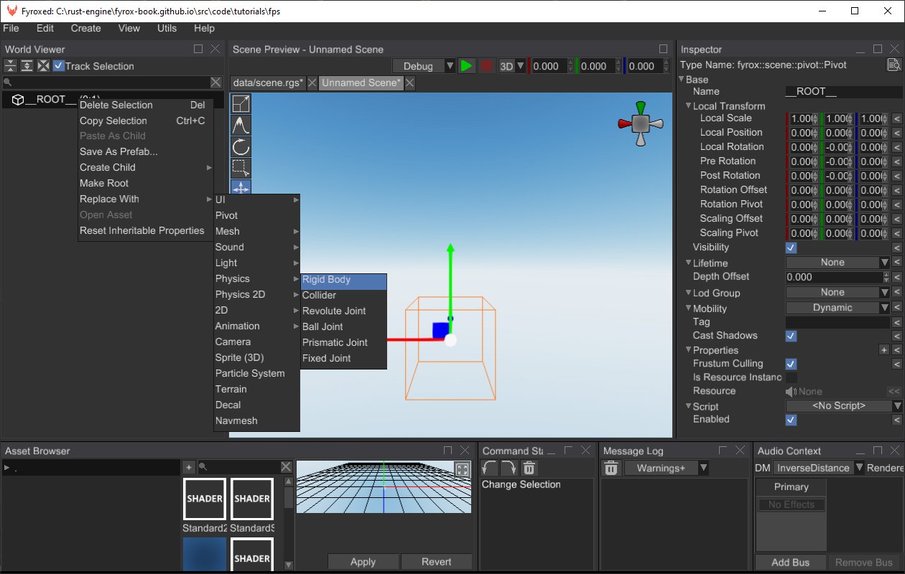
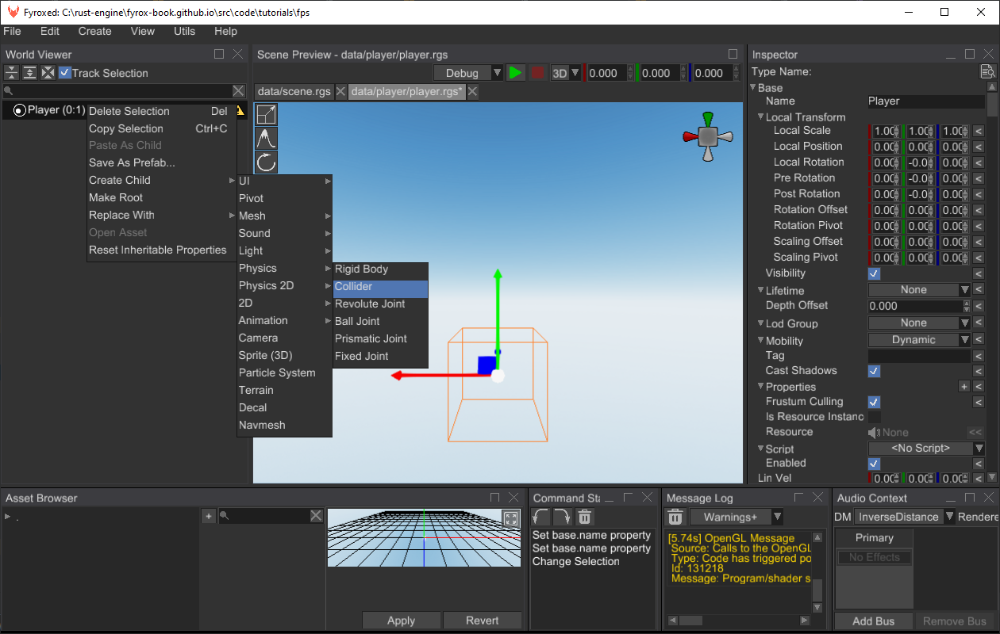
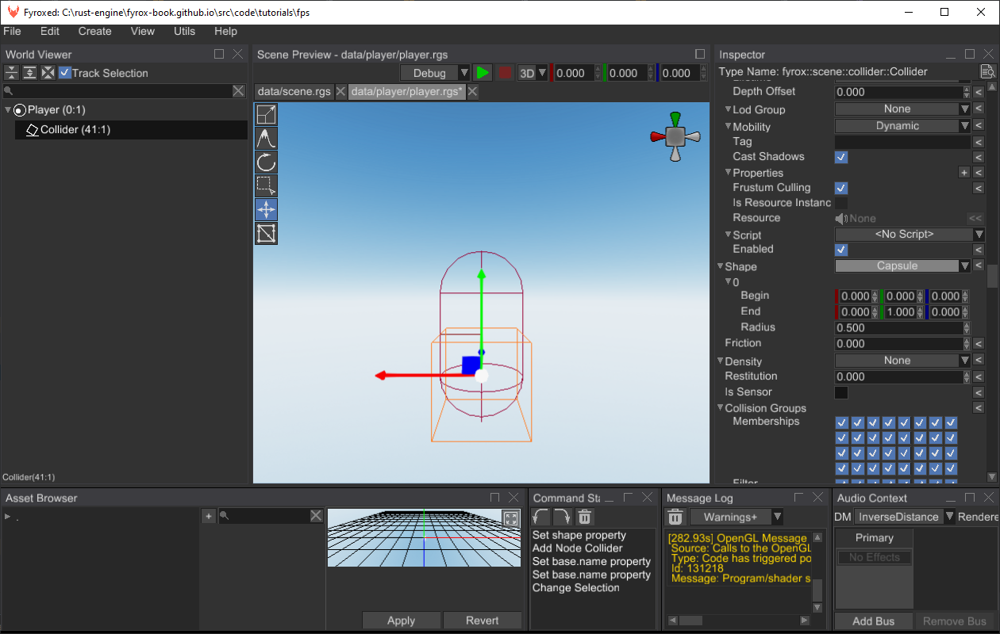
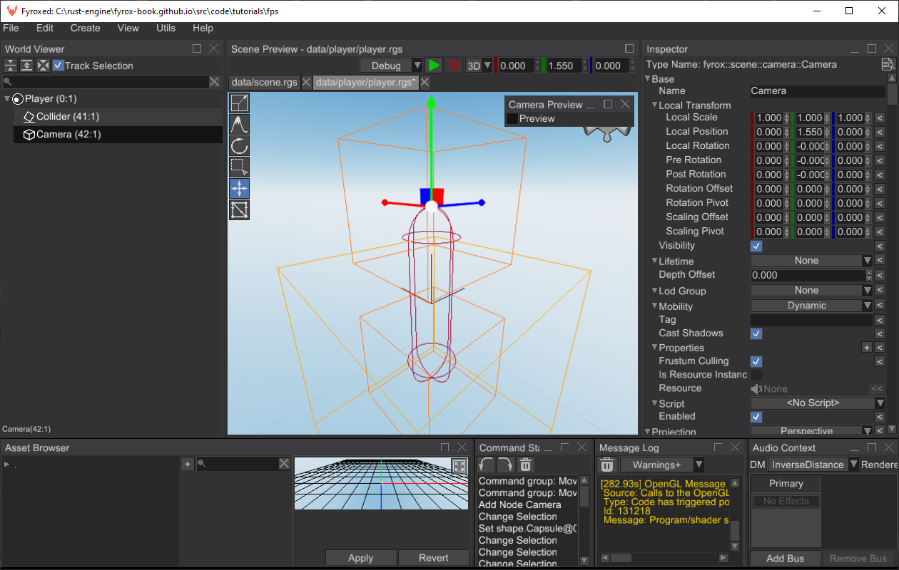
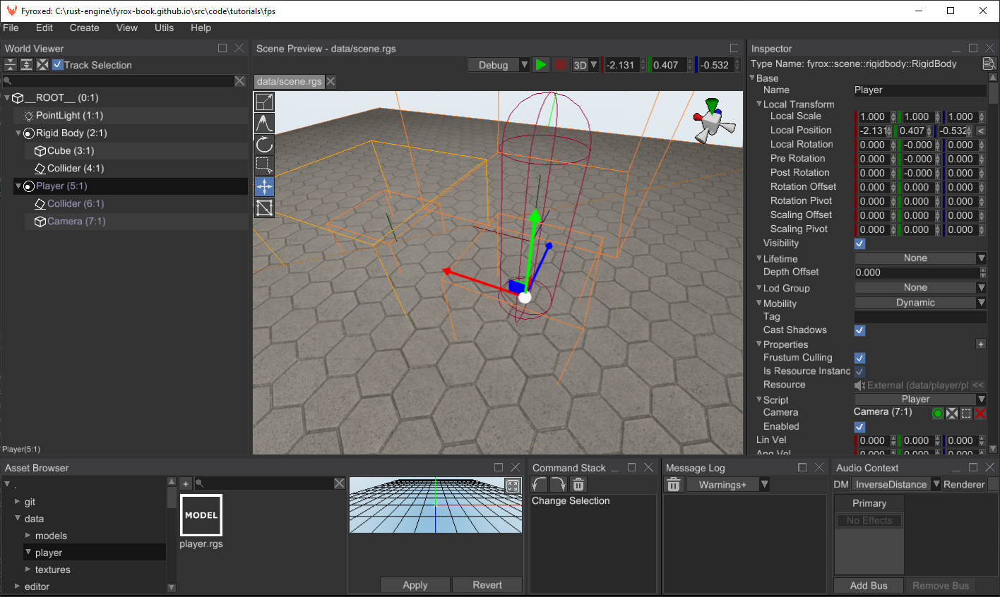

First-Person Shooter Tutorial
In this tutorial we'll create a first-person shooter game.
Before we begin, make sure you know how to create projects and run the game and the editor. Read this chapter first and let's start by creating a new project by executing the following command in some directory:
fyrox-template init --name=fps --style=3d
This command will create a new cargo workspace with a few projects inside, we're interested only in game folder
in this tutorial.
fps
├───data
├───editor
│ └───src
├───executor
│ └───src
├───executor-android
│ └───src
├───executor-wasm
│ └───src
└───game
└───src
Player Prefab
Let's start by creating a prefab for the player. First-person shooters uses quite simple layout for characters - usually it is just a physical capsule with a camera on top of it. Run the editor using the following command:
cargo run --package editor

By default, scene.rgs scene is loaded, and it is our main scene, but for our player prefab we need a separate scene.
Go to File menu and click New Scene. Save the scene in data/player folder as player.rgs.
Great, now we ready to create the prefab. Right-click on the __ROOT__ node in the World Viewer and find Replace Node
and select Physics -> Rigid Body there. By doing this, we've replaced the root node of the scene to be a rigid body.
This is needed, because our player will be moving.

Select rigid body and set the X/Y/Z Rotation Locked properties to true, Can Sleep - to false. The first three
properties prevents the rigid body from any undesired rotations and the last one prevents the rigid body to be excluded
from simulation.s

As you may notice, the editor added a small "warning" icon near the root node - it tells us that the rigid body does not have a collider. Let's fix that:

By default, the editor creates a cube collider, but we need a capsule. Let's change that in the Inspector:

Now let's change the size of the collider, because default values are disproportional for a humanoid character:

This way the capsule is thinner and taller, which roughly corresponds to a person of 1.8m tall. Now we need to add a camera, because without it, we couldn't see anything.

Put the camera at the top of the capsule like so:

Awesome, at this point we're almost done with this prefab. Save the scene (File -> Save Scene) and let's start writing
some code.
Code
Now we can start writing some code, that will drive our character. Game logic is located in scripts.
Navigate to the fps directory and execute the following command there:
fyrox-template script --name=player
This command creates a new script for our player in game/src folder. All you need to do now is to add the new module
to the lib.rs module by adding the pub mod player; after the imports:
#![allow(unused)] fn main() { //! Game project. use crate::player::Player; use fyrox::{ core::pool::Handle, event::Event, gui::message::UiMessage, plugin::{Plugin, PluginConstructor, PluginContext, PluginRegistrationContext}, scene::Scene, }; use std::path::Path; // Add this line pub mod player; }
All scripts must be registered in the engine explicitly, otherwise they won't work. To do that, add the following
lines to the register method:
#![allow(unused)] fn main() { fn register(&self, context: PluginRegistrationContext) { context .serialization_context .script_constructors .add::<Player>("Player"); } }
Great, now the new script is registered, and we can start writing a basic character controller. Let's start by input
handling. At first, add the following fields to the Player struct:
#![allow(unused)] fn main() { #[visit(optional)] #[reflect(hidden)] move_forward: bool, #[visit(optional)] #[reflect(hidden)] move_backward: bool, #[visit(optional)] #[reflect(hidden)] move_left: bool, #[visit(optional)] #[reflect(hidden)] move_right: bool, #[visit(optional)] #[reflect(hidden)] yaw: f32, #[visit(optional)] #[reflect(hidden)] pitch: f32, }
The first four fields are responsible for movement in four directions and the last two responsible for camera rotation.
The next thing that we need to do is properly react to incoming OS events to modify the variables that we've just
defined. Add the following code to the on_os_event method like so:
#![allow(unused)] fn main() { fn on_os_event(&mut self, event: &Event<()>, context: &mut ScriptContext) { match event { // Raw mouse input is responsible for camera rotation. Event::DeviceEvent { event: DeviceEvent::MouseMotion { delta: (dx, dy), .. }, .. } => { // Pitch is responsible for vertical camera rotation. It has -89.9..89.0 degree limits, // to prevent infinite rotation. let mouse_speed = 0.35; self.pitch = (self.pitch + *dy as f32 * mouse_speed).clamp(-89.9, 89.9); self.yaw -= *dx as f32 * mouse_speed; } // Keyboard input is responsible for player's movement. Event::WindowEvent { event: WindowEvent::KeyboardInput { event, .. }, .. } => { if let PhysicalKey::Code(code) = event.physical_key { let is_pressed = event.state == ElementState::Pressed; match code { KeyCode::KeyW => { self.move_forward = is_pressed; } KeyCode::KeyS => { self.move_backward = is_pressed; } KeyCode::KeyA => { self.move_left = is_pressed; } KeyCode::KeyD => { self.move_right = is_pressed; } _ => (), } } } _ => {} } } }
This code consists from two major parts:
- Raw mouse input handling for camera rotations: we're using horizontal movement to rotate the camera around vertical axis and vertical mouse movement is used to rotate the camera around horizontal axis.
- Keyboard input handling for movement.
This just modifies the internal script variables, and basically does not affect anything else. Next thing we'll add
movement code. Add the following code to on_update:
#![allow(unused)] fn main() { fn on_update(&mut self, context: &mut ScriptContext) { let mut look_vector = Vector3::default(); let mut side_vector = Vector3::default(); if let Some(camera) = context.scene.graph.try_get_mut(self.camera) { look_vector = camera.look_vector(); side_vector = camera.side_vector(); let yaw = UnitQuaternion::from_axis_angle(&Vector3::y_axis(), self.yaw.to_radians()); let transform = camera.local_transform_mut(); transform.set_rotation( UnitQuaternion::from_axis_angle( &UnitVector3::new_normalize(yaw * Vector3::x()), self.pitch.to_radians(), ) * yaw, ); } // Borrow the node to which this script is assigned to. We also check if the node is RigidBody. if let Some(rigid_body) = context .scene .graph .try_get_mut_of_type::<RigidBody>(context.handle) { // Form a new velocity vector that corresponds to the pressed buttons. let mut velocity = Vector3::new(0.0, 0.0, 0.0); if self.move_forward { velocity += look_vector; } if self.move_backward { velocity -= look_vector; } if self.move_left { velocity += side_vector; } if self.move_right { velocity -= side_vector; } let y_vel = rigid_body.lin_vel().y; if let Some(normalized_velocity) = velocity.try_normalize(f32::EPSILON) { let movement_speed = 240.0 * context.dt; rigid_body.set_lin_vel(Vector3::new( normalized_velocity.x * movement_speed, y_vel, normalized_velocity.z * movement_speed, )); } else { // Hold player in-place in XZ plane when no button is pressed. rigid_body.set_lin_vel(Vector3::new(0.0, y_vel, 0.0)); } } } }
This code is responsible for movement when any of WSAD keys are pressed. At first, it tries to borrow the node to which this script is assigned to, then it checks if any of the WSAD keys are pressed, and it forms a new velocity vector using the basis vectors of node. As the last step, it normalizes the vector (makes it unity length) and sets it to the rigid body velocity.
Now let's add camera rotation, at first we need to know the camera handle. Add the following field to the Player struct:
#![allow(unused)] fn main() { #[visit(optional)] camera: Handle<Node>, }
We'll assign this field later in the editor, for let's focus on the code. Add the following piece of code at the end of
the on_update:
#![allow(unused)] fn main() { let mut look_vector = Vector3::default(); let mut side_vector = Vector3::default(); if let Some(camera) = context.scene.graph.try_get_mut(self.camera) { look_vector = camera.look_vector(); side_vector = camera.side_vector(); let yaw = UnitQuaternion::from_axis_angle(&Vector3::y_axis(), self.yaw.to_radians()); let transform = camera.local_transform_mut(); transform.set_rotation( UnitQuaternion::from_axis_angle( &UnitVector3::new_normalize(yaw * Vector3::x()), self.pitch.to_radians(), ) * yaw, ); } }
This piece of code is relatively straightforward: at first we're trying to borrow the camera in the scene graph using its handle, if it is succeeded, we form two quaternions that represent rotations around Y and X axes and combine them using simple multiplication.
Our script is almost ready, now all we need to do is to assign it to the player's prefab. Open the player.rgs prefab
in the editor, select Player node and assign the Player script to it. Do not forget to set Camera handle (by clicking
on the small green button and selecting Camera from the list):

Great, now we're done with the player movement. We can test it our main scene, but at first let's create a simple level.
Open scene.rgs and create a rigid body with a collider. Add a cube as a child of the rigid body and squash it to some
floor-like shape. Select the collider and set it's kind to Trimesh, add a geometry source there and point it to the
floor. Select the rigid body and set its type to Static. You can also add some texture to the cube to make it look
much better.
Now we can instantiate our player prefab in the scene. To do that, find the player.rgs in the Asset Browser, click
on it, hold the button, move the mouse over the scene and release the button. After that the prefab should be instantiated
at the cursor position like so:

After that you can click Play button (green triangle above the scene preview) and you should see something like this:

It should be possible to walk using WSAD keys and rotate the camera using mouse.
Weapons
Work-in-progress.
Bots and AI
Work-in-progress.